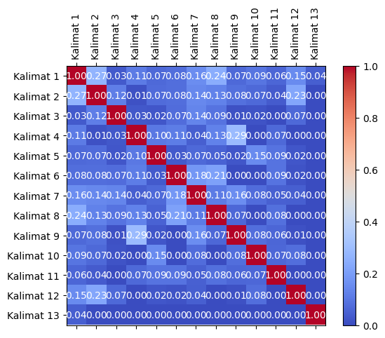
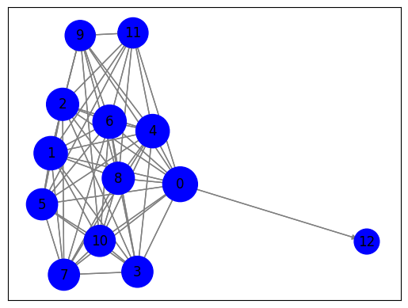

Copy_of_tugasgraph_2#
Library/Environment Module#
import requests
from bs4 import BeautifulSoup
import nltk
from sklearn.feature_extraction.text import TfidfVectorizer
from sklearn.metrics.pairwise import cosine_similarity
import pandas as pd
import numpy as np
import matplotlib.pyplot as plt
import networkx as nx
Scraping/Crawling Berita#
import requests
from bs4 import BeautifulSoup
import nltk
# Unduh konten halaman web berita
url = "https://www.antaranews.com/berita/3799899/indonesiapetakan-kekuatan-lawan-di-penyisihan-grup-piala-dunia-u-17?utm_source=antaranews&utm_medium=desktop&utm_campaign=menu_news"
response = requests.get(url)
html = response.text
# Parsing halaman web menggunakan BeautifulSoup
soup = BeautifulSoup(html, 'html.parser')
# Ekstraksi teks dari elemen-elemen yang berisi berita
article = soup.find('div' ,class_="post-content clearfix") # Sesuaikan dengan struktur HTML halaman web berita
article_text = article.get_text()
# Tokenisasi teks menjadi kalimat menggunakan nltk
nltk.download('punkt')
sentences = nltk.sent_tokenize(article_text)
# Cetak kalimat-kalimat
for sentence in sentences:
print(sentence)
[nltk_data] Downloading package punkt to /root/nltk_data...
[nltk_data] Unzipping tokenizers/punkt.zip.
Jakarta (ANTARA) - Tim Nasional (Tim) Nasional Indonesia telah melakukan pemetaan kekuatan tim yang menjadi lawan-lawan mereka di babak penyisihan Grup A Piala Dunia U-17 yang digelar mulai 10 November.
Pelatih kepala Timnas Indonesia U-17 Bima Sakti di Jakarta, Senin mengatakan jajaran pelatih sudah melihat berbagai referensi seperti potongan video pertandingan untuk menganalisis kekuatan dan kelemahan tim-tim lawan yaitu Ekuador, Panama maupun Maroko yang akan mereka hadapi di Stadion Gelora Bung Tomo, Surabaya pada fase grup.
“Kita libatkan coach Frank Wormuth serta coach Indra Sjafri untuk membaca data tersebut dan menyusun strategi dalam laga nanti,” kata Bima ketika memimpin latihan di Jakarta, Senin.
Ia mengaku optimistis dengan kemampuan anak-anak yang telah melakukan serangkaian pemusatan latihan.
Mereka telah bertanding dengan Barcelona dan Kashima Antlers pada Agustus lalu.
Kemudian pemusatan latihan di Jerman dengan menghadapi sejumlah tim, meskipun tidak melakoni uji joba melawan timnas muda Jerman sesuai arahan Wormuth.
“Ini sesuai masukan dari Coach Frank yang sudah memilih lawan mana yang dihadapi Timnas U-17 di Jerman beberapa waktu lalu.
Tim yang dipilih sesuai dengan kebutuhan latihan tim,” kata dia.
Ia mengatakan saat ini anak-anak asuhnya sudah memiliki mental yang bagus, fisik yang lebih baik dan teknik permainan yang semakin bagus.
“Mereka semua fokus pada Piala Dunia ini dan ini merupakan kesempatan langka bagi mereka, mungkin sekali seumur hidup.
Mereka tidak terbebani dengan target tapi berupaya memberikan yang terbaik,” katanya.
Piala Dunia U-17 digelar di empat arena yakni Jakarta Internasional Stadium (JIS), Jakarta, Gelora Bung Tomo, Surabaya; Stadion Mahanan, Solo; dan Stadion Si Jalak Harupat Bandung.
Pewarta: Mario Sofia NasutionEditor: Aditya Eko Sigit Wicaksono COPYRIGHT © ANTARA 2023
Vektorisasi TF-IDF#
from sklearn.feature_extraction.text import TfidfVectorizer
# Inisialisasi penghitung TF-IDF
tfidf_vectorizer = TfidfVectorizer()
# Hitung TF-IDF
tfidf_matrix = tfidf_vectorizer.fit_transform(sentences)
# Daftar kata kunci
feature_names = tfidf_vectorizer.get_feature_names_out()
# Konversi matriks TF-IDF menjadi bentuk yang lebih mudah dibaca
tfidf_values = tfidf_matrix.toarray()
# Cetak TF-IDF untuk setiap kata dalam setiap kalimat
for i, sentence in enumerate(sentences):
print(f"Kalimat {i + 1}: {sentence}")
for j, word in enumerate(feature_names):
tfidf_value = tfidf_values[i][j]
if tfidf_value > 0:
print(f"{word}: {tfidf_value:.4f}")
print()
Kalimat 1:
Jakarta (ANTARA) - Tim Nasional (Tim) Nasional Indonesia telah melakukan pemetaan kekuatan tim yang menjadi lawan-lawan mereka di babak penyisihan Grup A Piala Dunia U-17 yang digelar mulai 10 November.
10: 0.1938
17: 0.1335
antara: 0.1671
babak: 0.1938
di: 0.1114
digelar: 0.1671
dunia: 0.1482
grup: 0.1671
indonesia: 0.1671
jakarta: 0.1335
kekuatan: 0.1671
lawan: 0.2964
melakukan: 0.1671
menjadi: 0.1938
mereka: 0.1215
mulai: 0.1938
nasional: 0.3876
november: 0.1938
pemetaan: 0.1938
penyisihan: 0.1938
piala: 0.1482
telah: 0.1482
tim: 0.4006
yang: 0.2052
Kalimat 2: Pelatih kepala Timnas Indonesia U-17 Bima Sakti di Jakarta, Senin mengatakan jajaran pelatih sudah melihat berbagai referensi seperti potongan video pertandingan untuk menganalisis kekuatan dan kelemahan tim-tim lawan yaitu Ekuador, Panama maupun Maroko yang akan mereka hadapi di Stadion Gelora Bung Tomo, Surabaya pada fase grup.
17: 0.1083
akan: 0.1573
berbagai: 0.1573
bima: 0.1356
bung: 0.1356
dan: 0.0904
di: 0.1808
ekuador: 0.1573
fase: 0.1573
gelora: 0.1356
grup: 0.1356
hadapi: 0.1573
indonesia: 0.1356
jajaran: 0.1573
jakarta: 0.1083
kekuatan: 0.1356
kelemahan: 0.1573
kepala: 0.1573
lawan: 0.1203
maroko: 0.1573
maupun: 0.1573
melihat: 0.1573
menganalisis: 0.1573
mengatakan: 0.1356
mereka: 0.0986
pada: 0.1203
panama: 0.1573
pelatih: 0.3145
pertandingan: 0.1573
potongan: 0.1573
referensi: 0.1573
sakti: 0.1573
senin: 0.1356
seperti: 0.1573
stadion: 0.1356
sudah: 0.1203
surabaya: 0.1356
tim: 0.2167
timnas: 0.1203
tomo: 0.1356
untuk: 0.1356
video: 0.1573
yaitu: 0.1573
yang: 0.0833
Kalimat 3: “Kita libatkan coach Frank Wormuth serta coach Indra Sjafri untuk membaca data tersebut dan menyusun strategi dalam laga nanti,” kata Bima ketika memimpin latihan di Jakarta, Senin.
bima: 0.1759
coach: 0.3517
dalam: 0.2039
dan: 0.1172
data: 0.2039
di: 0.1172
frank: 0.1759
indra: 0.2039
jakarta: 0.1405
kata: 0.1759
ketika: 0.2039
kita: 0.2039
laga: 0.2039
latihan: 0.1405
libatkan: 0.2039
membaca: 0.2039
memimpin: 0.2039
menyusun: 0.2039
nanti: 0.2039
senin: 0.1759
serta: 0.2039
sjafri: 0.2039
strategi: 0.2039
tersebut: 0.2039
untuk: 0.1759
wormuth: 0.1759
Kalimat 4: Ia mengaku optimistis dengan kemampuan anak-anak yang telah melakukan serangkaian pemusatan latihan.
anak: 0.5215
dengan: 0.1896
ia: 0.2607
kemampuan: 0.3024
latihan: 0.2083
melakukan: 0.2607
mengaku: 0.3024
optimistis: 0.3024
pemusatan: 0.2607
serangkaian: 0.3024
telah: 0.2312
yang: 0.1601
Kalimat 5: Mereka telah bertanding dengan Barcelona dan Kashima Antlers pada Agustus lalu.
agustus: 0.3529
antlers: 0.3529
barcelona: 0.3529
bertanding: 0.3529
dan: 0.2028
dengan: 0.2213
kashima: 0.3529
lalu: 0.3043
mereka: 0.2213
pada: 0.2699
telah: 0.2699
Kalimat 6: Kemudian pemusatan latihan di Jerman dengan menghadapi sejumlah tim, meskipun tidak melakoni uji joba melawan timnas muda Jerman sesuai arahan Wormuth.
arahan: 0.2354
dengan: 0.1476
di: 0.1353
jerman: 0.4060
joba: 0.2354
kemudian: 0.2354
latihan: 0.1622
melakoni: 0.2354
melawan: 0.2354
menghadapi: 0.2354
meskipun: 0.2354
muda: 0.2354
pemusatan: 0.2030
sejumlah: 0.2354
sesuai: 0.1800
tidak: 0.2030
tim: 0.1622
timnas: 0.1800
uji: 0.2354
wormuth: 0.2030
Kalimat 7: “Ini sesuai masukan dari Coach Frank yang sudah memilih lawan mana yang dihadapi Timnas U-17 di Jerman beberapa waktu lalu.
17: 0.1789
beberapa: 0.2597
coach: 0.2240
dari: 0.2597
di: 0.1493
dihadapi: 0.2597
frank: 0.2240
ini: 0.1986
jerman: 0.2240
lalu: 0.2240
lawan: 0.1986
mana: 0.2597
masukan: 0.2597
memilih: 0.2597
sesuai: 0.1986
sudah: 0.1986
timnas: 0.1986
waktu: 0.2597
yang: 0.2750
Kalimat 8: Tim yang dipilih sesuai dengan kebutuhan latihan tim,” kata dia.
dengan: 0.2309
dia: 0.3682
dipilih: 0.3682
kata: 0.3175
kebutuhan: 0.3682
latihan: 0.2537
sesuai: 0.2816
tim: 0.5074
yang: 0.1949
Kalimat 9: Ia mengatakan saat ini anak-anak asuhnya sudah memiliki mental yang bagus, fisik yang lebih baik dan teknik permainan yang semakin bagus.
anak: 0.3637
asuhnya: 0.2109
bagus: 0.4218
baik: 0.2109
dan: 0.1212
fisik: 0.2109
ia: 0.1819
ini: 0.1613
lebih: 0.2109
memiliki: 0.2109
mengatakan: 0.1819
mental: 0.2109
permainan: 0.2109
saat: 0.2109
semakin: 0.2109
sudah: 0.1613
teknik: 0.2109
yang: 0.3349
Kalimat 10: “Mereka semua fokus pada Piala Dunia ini dan ini merupakan kesempatan langka bagi mereka, mungkin sekali seumur hidup.
bagi: 0.2500
dan: 0.1437
dunia: 0.1912
fokus: 0.2500
hidup: 0.2500
ini: 0.3824
kesempatan: 0.2500
langka: 0.2500
mereka: 0.3136
merupakan: 0.2500
mungkin: 0.2500
pada: 0.1912
piala: 0.1912
sekali: 0.2500
semua: 0.2500
seumur: 0.2500
Kalimat 11: Mereka tidak terbebani dengan target tapi berupaya memberikan yang terbaik,” katanya.
berupaya: 0.3369
dengan: 0.2113
katanya: 0.3369
memberikan: 0.3369
mereka: 0.2113
tapi: 0.3369
target: 0.3369
terbaik: 0.3369
terbebani: 0.3369
tidak: 0.2905
yang: 0.1784
Kalimat 12: Piala Dunia U-17 digelar di empat arena yakni Jakarta Internasional Stadium (JIS), Jakarta, Gelora Bung Tomo, Surabaya; Stadion Mahanan, Solo; dan Stadion Si Jalak Harupat Bandung.
17: 0.1440
arena: 0.2090
bandung: 0.2090
bung: 0.1802
dan: 0.1201
di: 0.1201
digelar: 0.1802
dunia: 0.1598
empat: 0.2090
gelora: 0.1802
harupat: 0.2090
internasional: 0.2090
jakarta: 0.2880
jalak: 0.2090
jis: 0.2090
mahanan: 0.2090
piala: 0.1598
si: 0.2090
solo: 0.2090
stadion: 0.3604
stadium: 0.2090
surabaya: 0.1802
tomo: 0.1802
yakni: 0.2090
Kalimat 13: Pewarta: Mario Sofia NasutionEditor: Aditya Eko Sigit Wicaksono COPYRIGHT © ANTARA 2023
2023: 0.3051
aditya: 0.3051
antara: 0.2631
copyright: 0.3051
eko: 0.3051
mario: 0.3051
nasutioneditor: 0.3051
pewarta: 0.3051
sigit: 0.3051
sofia: 0.3051
wicaksono: 0.3051
Pre-processing dan Tabeling#
# Cleansing step to remove unwanted characters
sentences = [sentence.replace('\n\t\t\t\t', ' ').replace('\t\t\t\t', ' ') for sentence in sentences]
# Inisialisasi penghitung TF-IDF
tfidf_vectorizer = TfidfVectorizer()
# Hitung TF-IDF
tfidf_matrix = tfidf_vectorizer.fit_transform(sentences)
# Daftar kata kunci
feature_names = tfidf_vectorizer.get_feature_names_out()
# Konversi matriks TF-IDF menjadi bentuk yang lebih mudah dibaca
tfidf_values = tfidf_matrix.toarray()
# Membuat DataFrame untuk menyimpan data TF-IDF
df_tfidf = pd.DataFrame(tfidf_values, columns=feature_names)
# Set sentences as the index
df_tfidf = df_tfidf.set_index(pd.Index(sentences))
# Menampilkan DataFrame
df_tfidf
| 10 | 17 | 2023 | aditya | agustus | akan | anak | antara | antlers | arahan | ... | tomo | uji | untuk | video | waktu | wicaksono | wormuth | yaitu | yakni | yang | |
|---|---|---|---|---|---|---|---|---|---|---|---|---|---|---|---|---|---|---|---|---|---|
| Jakarta (ANTARA) - Tim Nasional (Tim) Nasional Indonesia telah melakukan pemetaan kekuatan tim yang menjadi lawan-lawan mereka di babak penyisihan Grup A Piala Dunia U-17 yang digelar mulai 10 November. | 0.193813 | 0.133530 | 0.000000 | 0.000000 | 0.000000 | 0.000000 | 0.000000 | 0.167138 | 0.000000 | 0.000000 | ... | 0.000000 | 0.000000 | 0.000000 | 0.000000 | 0.000000 | 0.000000 | 0.000000 | 0.000000 | 0.000000 | 0.205216 |
| Pelatih kepala Timnas Indonesia U-17 Bima Sakti di Jakarta, Senin mengatakan jajaran pelatih sudah melihat berbagai referensi seperti potongan video pertandingan untuk menganalisis kekuatan dan kelemahan tim-tim lawan yaitu Ekuador, Panama maupun Maroko yang akan mereka hadapi di Stadion Gelora Bung Tomo, Surabaya pada fase grup. | 0.000000 | 0.108345 | 0.000000 | 0.000000 | 0.000000 | 0.157258 | 0.000000 | 0.000000 | 0.000000 | 0.000000 | ... | 0.135614 | 0.000000 | 0.135614 | 0.157258 | 0.000000 | 0.000000 | 0.000000 | 0.157258 | 0.000000 | 0.083255 |
| “Kita libatkan coach Frank Wormuth serta coach Indra Sjafri untuk membaca data tersebut dan menyusun strategi dalam laga nanti,” kata Bima ketika memimpin latihan di Jakarta, Senin. | 0.000000 | 0.000000 | 0.000000 | 0.000000 | 0.000000 | 0.000000 | 0.000000 | 0.000000 | 0.000000 | 0.000000 | ... | 0.000000 | 0.000000 | 0.175858 | 0.000000 | 0.000000 | 0.000000 | 0.175858 | 0.000000 | 0.000000 | 0.000000 |
| Ia mengaku optimistis dengan kemampuan anak-anak yang telah melakukan serangkaian pemusatan latihan. | 0.000000 | 0.000000 | 0.000000 | 0.000000 | 0.000000 | 0.000000 | 0.521481 | 0.000000 | 0.000000 | 0.000000 | ... | 0.000000 | 0.000000 | 0.000000 | 0.000000 | 0.000000 | 0.000000 | 0.000000 | 0.000000 | 0.000000 | 0.160072 |
| Mereka telah bertanding dengan Barcelona dan Kashima Antlers pada Agustus lalu. | 0.000000 | 0.000000 | 0.000000 | 0.000000 | 0.352892 | 0.000000 | 0.000000 | 0.000000 | 0.352892 | 0.000000 | ... | 0.000000 | 0.000000 | 0.000000 | 0.000000 | 0.000000 | 0.000000 | 0.000000 | 0.000000 | 0.000000 | 0.000000 |
| Kemudian pemusatan latihan di Jerman dengan menghadapi sejumlah tim, meskipun tidak melakoni uji joba melawan timnas muda Jerman sesuai arahan Wormuth. | 0.000000 | 0.000000 | 0.000000 | 0.000000 | 0.000000 | 0.000000 | 0.000000 | 0.000000 | 0.000000 | 0.235388 | ... | 0.000000 | 0.235388 | 0.000000 | 0.000000 | 0.000000 | 0.000000 | 0.202990 | 0.000000 | 0.000000 | 0.000000 |
| “Ini sesuai masukan dari Coach Frank yang sudah memilih lawan mana yang dihadapi Timnas U-17 di Jerman beberapa waktu lalu. | 0.000000 | 0.178938 | 0.000000 | 0.000000 | 0.000000 | 0.000000 | 0.000000 | 0.000000 | 0.000000 | 0.000000 | ... | 0.000000 | 0.000000 | 0.000000 | 0.000000 | 0.259721 | 0.000000 | 0.000000 | 0.000000 | 0.000000 | 0.275001 |
| Tim yang dipilih sesuai dengan kebutuhan latihan tim,” kata dia. | 0.000000 | 0.000000 | 0.000000 | 0.000000 | 0.000000 | 0.000000 | 0.000000 | 0.000000 | 0.000000 | 0.000000 | ... | 0.000000 | 0.000000 | 0.000000 | 0.000000 | 0.000000 | 0.000000 | 0.000000 | 0.000000 | 0.000000 | 0.194943 |
| Ia mengatakan saat ini anak-anak asuhnya sudah memiliki mental yang bagus, fisik yang lebih baik dan teknik permainan yang semakin bagus. | 0.000000 | 0.000000 | 0.000000 | 0.000000 | 0.000000 | 0.000000 | 0.363730 | 0.000000 | 0.000000 | 0.000000 | ... | 0.000000 | 0.000000 | 0.000000 | 0.000000 | 0.000000 | 0.000000 | 0.000000 | 0.000000 | 0.000000 | 0.334949 |
| “Mereka semua fokus pada Piala Dunia ini dan ini merupakan kesempatan langka bagi mereka, mungkin sekali seumur hidup. | 0.000000 | 0.000000 | 0.000000 | 0.000000 | 0.000000 | 0.000000 | 0.000000 | 0.000000 | 0.000000 | 0.000000 | ... | 0.000000 | 0.000000 | 0.000000 | 0.000000 | 0.000000 | 0.000000 | 0.000000 | 0.000000 | 0.000000 | 0.000000 |
| Mereka tidak terbebani dengan target tapi berupaya memberikan yang terbaik,” katanya. | 0.000000 | 0.000000 | 0.000000 | 0.000000 | 0.000000 | 0.000000 | 0.000000 | 0.000000 | 0.000000 | 0.000000 | ... | 0.000000 | 0.000000 | 0.000000 | 0.000000 | 0.000000 | 0.000000 | 0.000000 | 0.000000 | 0.000000 | 0.178361 |
| Piala Dunia U-17 digelar di empat arena yakni Jakarta Internasional Stadium (JIS), Jakarta, Gelora Bung Tomo, Surabaya; Stadion Mahanan, Solo; dan Stadion Si Jalak Harupat Bandung. | 0.000000 | 0.143982 | 0.000000 | 0.000000 | 0.000000 | 0.000000 | 0.000000 | 0.000000 | 0.000000 | 0.000000 | ... | 0.180221 | 0.000000 | 0.000000 | 0.000000 | 0.000000 | 0.000000 | 0.000000 | 0.000000 | 0.208985 | 0.000000 |
| Pewarta: Mario Sofia NasutionEditor: Aditya Eko Sigit Wicaksono COPYRIGHT © ANTARA 2023 | 0.000000 | 0.000000 | 0.305087 | 0.305087 | 0.000000 | 0.000000 | 0.000000 | 0.263096 | 0.000000 | 0.000000 | ... | 0.000000 | 0.000000 | 0.000000 | 0.000000 | 0.000000 | 0.305087 | 0.000000 | 0.000000 | 0.000000 | 0.000000 |
13 rows × 166 columns
Import CSV#
df_tfidf.to_csv('Graoph.csv', index=True)
Perbandingan kesamaan antar kalimat menggunakan Cosine Similarity#
from sklearn.metrics.pairwise import cosine_similarity
from sklearn.feature_extraction.text import TfidfVectorizer
# Indeks kalimat yang akan dibandingkan
sentence1_index = 0 # Ganti dengan indeks kalimat pertama yang ingin Anda bandingkan
sentence2_index = 1 # Ganti dengan indeks kalimat kedua yang ingin Anda bandingkan
# Ambil vektor TF-IDF untuk kedua kalimat
tfidf_vector1 = tfidf_matrix[sentence1_index]
tfidf_vector2 = tfidf_matrix[sentence2_index]
# Hitung cosine similarity antara kedua vektor
similarity = cosine_similarity(tfidf_vector1, tfidf_vector2)
# Cetak hasil cosine similarity
print(f"Cosine Similarity antara Kalimat {sentence1_index + 1} dan Kalimat {sentence2_index + 1}: {similarity[0][0]:.4f}")
Cosine Similarity antara Kalimat 1 dan Kalimat 2: 0.2686
# Matriks TF-IDF telah dihitung sebelumnya (tfidf_matrix)
# Hitung cosine similarity antara semua pasangan kalimat
similarity_matrix = cosine_similarity(tfidf_matrix, tfidf_matrix)
# Cetak hasil similarity_matrix
num_sentences = len(sentences) # Jumlah kalimat
for i in range(num_sentences):
for j in range(i+1, num_sentences):
similarity = similarity_matrix[i][j]
print(f"Cosine Similarity antara Kalimat {i + 1} dan Kalimat {j + 1}: {similarity:.4f}")
Cosine Similarity antara Kalimat 1 dan Kalimat 2: 0.2686
Cosine Similarity antara Kalimat 1 dan Kalimat 3: 0.0318
Cosine Similarity antara Kalimat 1 dan Kalimat 4: 0.1107
Cosine Similarity antara Kalimat 1 dan Kalimat 5: 0.0669
Cosine Similarity antara Kalimat 1 dan Kalimat 6: 0.0800
Cosine Similarity antara Kalimat 1 dan Kalimat 7: 0.1558
Cosine Similarity antara Kalimat 1 dan Kalimat 8: 0.2433
Cosine Similarity antara Kalimat 1 dan Kalimat 9: 0.0687
Cosine Similarity antara Kalimat 1 dan Kalimat 10: 0.0948
Cosine Similarity antara Kalimat 1 dan Kalimat 11: 0.0623
Cosine Similarity antara Kalimat 1 dan Kalimat 12: 0.1486
Cosine Similarity antara Kalimat 1 dan Kalimat 13: 0.0440
Cosine Similarity antara Kalimat 2 dan Kalimat 3: 0.1185
Cosine Similarity antara Kalimat 2 dan Kalimat 4: 0.0133
Cosine Similarity antara Kalimat 2 dan Kalimat 5: 0.0726
Cosine Similarity antara Kalimat 2 dan Kalimat 6: 0.0812
Cosine Similarity antara Kalimat 2 dan Kalimat 7: 0.1409
Cosine Similarity antara Kalimat 2 dan Kalimat 8: 0.1262
Cosine Similarity antara Kalimat 2 dan Kalimat 9: 0.0829
Cosine Similarity antara Kalimat 2 dan Kalimat 10: 0.0669
Cosine Similarity antara Kalimat 2 dan Kalimat 11: 0.0357
Cosine Similarity antara Kalimat 2 dan Kalimat 12: 0.2260
Cosine Similarity antara Kalimat 2 dan Kalimat 13: 0.0000
Cosine Similarity antara Kalimat 3 dan Kalimat 4: 0.0293
Cosine Similarity antara Kalimat 3 dan Kalimat 5: 0.0238
Cosine Similarity antara Kalimat 3 dan Kalimat 6: 0.0743
Cosine Similarity antara Kalimat 3 dan Kalimat 7: 0.1357
Cosine Similarity antara Kalimat 3 dan Kalimat 8: 0.0915
Cosine Similarity antara Kalimat 3 dan Kalimat 9: 0.0142
Cosine Similarity antara Kalimat 3 dan Kalimat 10: 0.0168
Cosine Similarity antara Kalimat 3 dan Kalimat 11: 0.0000
Cosine Similarity antara Kalimat 3 dan Kalimat 12: 0.0686
Cosine Similarity antara Kalimat 3 dan Kalimat 13: 0.0000
Cosine Similarity antara Kalimat 4 dan Kalimat 5: 0.1044
Cosine Similarity antara Kalimat 4 dan Kalimat 6: 0.1147
Cosine Similarity antara Kalimat 4 dan Kalimat 7: 0.0440
Cosine Similarity antara Kalimat 4 dan Kalimat 8: 0.1278
Cosine Similarity antara Kalimat 4 dan Kalimat 9: 0.2907
Cosine Similarity antara Kalimat 4 dan Kalimat 10: 0.0000
Cosine Similarity antara Kalimat 4 dan Kalimat 11: 0.0686
Cosine Similarity antara Kalimat 4 dan Kalimat 12: 0.0000
Cosine Similarity antara Kalimat 4 dan Kalimat 13: 0.0000
Cosine Similarity antara Kalimat 5 dan Kalimat 6: 0.0327
Cosine Similarity antara Kalimat 5 dan Kalimat 7: 0.0682
Cosine Similarity antara Kalimat 5 dan Kalimat 8: 0.0511
Cosine Similarity antara Kalimat 5 dan Kalimat 9: 0.0246
Cosine Similarity antara Kalimat 5 dan Kalimat 10: 0.1501
Cosine Similarity antara Kalimat 5 dan Kalimat 11: 0.0935
Cosine Similarity antara Kalimat 5 dan Kalimat 12: 0.0244
Cosine Similarity antara Kalimat 5 dan Kalimat 13: 0.0000
Cosine Similarity antara Kalimat 6 dan Kalimat 7: 0.1826
Cosine Similarity antara Kalimat 6 dan Kalimat 8: 0.2082
Cosine Similarity antara Kalimat 6 dan Kalimat 9: 0.0000
Cosine Similarity antara Kalimat 6 dan Kalimat 10: 0.0000
Cosine Similarity antara Kalimat 6 dan Kalimat 11: 0.0902
Cosine Similarity antara Kalimat 6 dan Kalimat 12: 0.0162
Cosine Similarity antara Kalimat 6 dan Kalimat 13: 0.0000
Cosine Similarity antara Kalimat 7 dan Kalimat 8: 0.1095
Cosine Similarity antara Kalimat 7 dan Kalimat 9: 0.1562
Cosine Similarity antara Kalimat 7 dan Kalimat 10: 0.0759
Cosine Similarity antara Kalimat 7 dan Kalimat 11: 0.0490
Cosine Similarity antara Kalimat 7 dan Kalimat 12: 0.0437
Cosine Similarity antara Kalimat 7 dan Kalimat 13: 0.0000
Cosine Similarity antara Kalimat 8 dan Kalimat 9: 0.0653
Cosine Similarity antara Kalimat 8 dan Kalimat 10: 0.0000
Cosine Similarity antara Kalimat 8 dan Kalimat 11: 0.0836
Cosine Similarity antara Kalimat 8 dan Kalimat 12: 0.0000
Cosine Similarity antara Kalimat 8 dan Kalimat 13: 0.0000
Cosine Similarity antara Kalimat 9 dan Kalimat 10: 0.0791
Cosine Similarity antara Kalimat 9 dan Kalimat 11: 0.0597
Cosine Similarity antara Kalimat 9 dan Kalimat 12: 0.0146
Cosine Similarity antara Kalimat 9 dan Kalimat 13: 0.0000
Cosine Similarity antara Kalimat 10 dan Kalimat 11: 0.0662
Cosine Similarity antara Kalimat 10 dan Kalimat 12: 0.0784
Cosine Similarity antara Kalimat 10 dan Kalimat 13: 0.0000
Cosine Similarity antara Kalimat 11 dan Kalimat 12: 0.0000
Cosine Similarity antara Kalimat 11 dan Kalimat 13: 0.0000
Cosine Similarity antara Kalimat 12 dan Kalimat 13: 0.0000
Perbandingan kesamaan antar kalimat menggunakan Cosine Similarity#
import pandas as pd
# Matriks TF-IDF telah dihitung sebelumnya (tfidf_matrix)
# Hitung cosine similarity antara semua pasangan kalimat
similarity_matrix = cosine_similarity(tfidf_matrix, tfidf_matrix)
# Nama kolom dan indeks untuk DataFrame
sentence_indices = [f"Kalimat {i + 1}" for i in range(len(sentences))]
# Buat DataFrame dari hasil cosine similarity
df = pd.DataFrame(similarity_matrix, columns=sentence_indices, index=sentence_indices)
# Cetak DataFrame
df
| Kalimat 1 | Kalimat 2 | Kalimat 3 | Kalimat 4 | Kalimat 5 | Kalimat 6 | Kalimat 7 | Kalimat 8 | Kalimat 9 | Kalimat 10 | Kalimat 11 | Kalimat 12 | Kalimat 13 | |
|---|---|---|---|---|---|---|---|---|---|---|---|---|---|
| Kalimat 1 | 1.000000 | 0.268590 | 0.031816 | 0.110697 | 0.066890 | 0.080035 | 0.155829 | 0.243258 | 0.068737 | 0.094784 | 0.062278 | 0.148551 | 0.043973 |
| Kalimat 2 | 0.268590 | 1.000000 | 0.118549 | 0.013327 | 0.072606 | 0.081244 | 0.140919 | 0.126175 | 0.082899 | 0.066903 | 0.035683 | 0.226011 | 0.000000 |
| Kalimat 3 | 0.031816 | 0.118549 | 1.000000 | 0.029267 | 0.023772 | 0.074339 | 0.135658 | 0.091485 | 0.014206 | 0.016843 | 0.000000 | 0.068614 | 0.000000 |
| Kalimat 4 | 0.110697 | 0.013327 | 0.029267 | 1.000000 | 0.104352 | 0.114696 | 0.044020 | 0.127831 | 0.290714 | 0.000000 | 0.068606 | 0.000000 | 0.000000 |
| Kalimat 5 | 0.066890 | 0.072606 | 0.023772 | 0.104352 | 1.000000 | 0.032663 | 0.068160 | 0.051096 | 0.024584 | 0.150132 | 0.093500 | 0.024362 | 0.000000 |
| Kalimat 6 | 0.080035 | 0.081244 | 0.074339 | 0.114696 | 0.032663 | 1.000000 | 0.182625 | 0.208194 | 0.000000 | 0.000000 | 0.090158 | 0.016250 | 0.000000 |
| Kalimat 7 | 0.155829 | 0.140919 | 0.135658 | 0.044020 | 0.068160 | 0.182625 | 1.000000 | 0.109535 | 0.156171 | 0.075948 | 0.049050 | 0.043694 | 0.000000 |
| Kalimat 8 | 0.243258 | 0.126175 | 0.091485 | 0.127831 | 0.051096 | 0.208194 | 0.109535 | 1.000000 | 0.065296 | 0.000000 | 0.083551 | 0.000000 | 0.000000 |
| Kalimat 9 | 0.068737 | 0.082899 | 0.014206 | 0.290714 | 0.024584 | 0.000000 | 0.156171 | 0.065296 | 1.000000 | 0.079087 | 0.059742 | 0.014559 | 0.000000 |
| Kalimat 10 | 0.094784 | 0.066903 | 0.016843 | 0.000000 | 0.150132 | 0.000000 | 0.075948 | 0.000000 | 0.079087 | 1.000000 | 0.066245 | 0.078372 | 0.000000 |
| Kalimat 11 | 0.062278 | 0.035683 | 0.000000 | 0.068606 | 0.093500 | 0.090158 | 0.049050 | 0.083551 | 0.059742 | 0.066245 | 1.000000 | 0.000000 | 0.000000 |
| Kalimat 12 | 0.148551 | 0.226011 | 0.068614 | 0.000000 | 0.024362 | 0.016250 | 0.043694 | 0.000000 | 0.014559 | 0.078372 | 0.000000 | 1.000000 | 0.000000 |
| Kalimat 13 | 0.043973 | 0.000000 | 0.000000 | 0.000000 | 0.000000 | 0.000000 | 0.000000 | 0.000000 | 0.000000 | 0.000000 | 0.000000 | 0.000000 | 1.000000 |
Menampilkan Tingkat similarity antar kalimat#
import pandas as pd
import numpy as np
import matplotlib.pyplot as plt
# Matriks TF-IDF telah dihitung sebelumnya (tfidf_matrix)
# Hitung cosine similarity antara semua pasangan kalimat
similarity_matrix = cosine_similarity(tfidf_matrix, tfidf_matrix)
# Nama kolom dan indeks untuk DataFrame
sentence_indices = [f"Kalimat {i + 1}" for i in range(len(sentences))]
# Buat DataFrame dari hasil cosine similarity
df = pd.DataFrame(similarity_matrix, columns=sentence_indices, index=sentence_indices)
# Membuat grafik matriks
fig, ax = plt.subplots()
cax = ax.matshow(df, cmap='coolwarm')
fig.colorbar(cax)
# Memberi label pada sumbu X dan Y
ax.set_xticks(np.arange(len(df.columns)))
ax.set_yticks(np.arange(len(df.index)))
ax.set_xticklabels(df.columns, rotation=90)
ax.set_yticklabels(df.index)
# Menampilkan nilai similarity pada matriks
for i in range(len(df.index)):
for j in range(len(df.columns)):
text = ax.text(j, i, f'{df.iat[i, j]:.2f}', ha='center', va='center', color='w')
plt.show()

Menampilkan Tingkat similarity antar kalimat#
# Buat grafik dari matriks similarity
G = nx.Graph()
kal = []
# Tambahkan simpul (node) ke grafik yang mewakili setiap kalimat
for sentence in sentences:
G.add_node(sentence)
kalimat=sentence
kal.append(kalimat)
# Tambahkan tepi (edge) antara kalimat berdasarkan similarity
for i in range(len(sentences)):
for j in range(i + 1, len(sentences)):
similarity = df.iloc[i, j] # Mengambil similarity dari DataFrame
if similarity > 0:
G.add_edge(sentences[i], sentences[j], weight=similarity)
# Hitung closeness centrality untuk setiap simpul
closeness_centrality = nx.closeness_centrality(G, distance='weight')
# Cetak closeness centrality
for sentence, centrality in closeness_centrality.items():
print(f"Closeness Centrality of {sentence}: {centrality:.4f}")
Closeness Centrality of Jakarta (ANTARA) - Tim Nasional (Tim) Nasional Indonesia telah melakukan pemetaan kekuatan tim yang menjadi lawan-lawan mereka di babak penyisihan Grup A Piala Dunia U-17 yang digelar mulai 10 November.: 15.5399
Closeness Centrality of Pelatih kepala Timnas Indonesia U-17 Bima Sakti di Jakarta, Senin mengatakan jajaran pelatih sudah melihat berbagai referensi seperti potongan video pertandingan untuk menganalisis kekuatan dan kelemahan tim-tim lawan yaitu Ekuador, Panama maupun Maroko yang akan mereka hadapi di Stadion Gelora Bung Tomo, Surabaya pada fase grup.: 15.1055
Closeness Centrality of “Kita libatkan coach Frank Wormuth serta coach Indra Sjafri untuk membaca data tersebut dan menyusun strategi dalam laga nanti,” kata Bima ketika memimpin latihan di Jakarta, Senin.: 22.6696
Closeness Centrality of Ia mengaku optimistis dengan kemampuan anak-anak yang telah melakukan serangkaian pemusatan latihan.: 17.6254
Closeness Centrality of Mereka telah bertanding dengan Barcelona dan Kashima Antlers pada Agustus lalu.: 19.2299
Closeness Centrality of Kemudian pemusatan latihan di Jerman dengan menghadapi sejumlah tim, meskipun tidak melakoni uji joba melawan timnas muda Jerman sesuai arahan Wormuth.: 15.5116
Closeness Centrality of “Ini sesuai masukan dari Coach Frank yang sudah memilih lawan mana yang dihadapi Timnas U-17 di Jerman beberapa waktu lalu.: 13.4706
Closeness Centrality of Tim yang dipilih sesuai dengan kebutuhan latihan tim,” kata dia.: 10.7699
Closeness Centrality of Ia mengatakan saat ini anak-anak asuhnya sudah memiliki mental yang bagus, fisik yang lebih baik dan teknik permainan yang semakin bagus.: 22.4388
Closeness Centrality of “Mereka semua fokus pada Piala Dunia ini dan ini merupakan kesempatan langka bagi mereka, mungkin sekali seumur hidup.: 17.7328
Closeness Centrality of Mereka tidak terbebani dengan target tapi berupaya memberikan yang terbaik,” katanya.: 14.3792
Closeness Centrality of Piala Dunia U-17 digelar di empat arena yakni Jakarta Internasional Stadium (JIS), Jakarta, Gelora Bung Tomo, Surabaya; Stadion Mahanan, Solo; dan Stadion Si Jalak Harupat Bandung.: 19.4325
Closeness Centrality of Pewarta: Mario Sofia NasutionEditor: Aditya Eko Sigit Wicaksono COPYRIGHT © ANTARA 2023: 9.5548
Menampilkan Tingkat similarity antar kalimat#
import networkx as nx
# Matriks TF-IDF telah dihitung sebelumnya (tfidf_matrix)
# Hitung cosine similarity antara semua pasangan kalimat
similarity_matrix = cosine_similarity(tfidf_matrix, tfidf_matrix)
# Buat grafik berarah (DiGraph) berdasarkan similarity_matrix
G = nx.DiGraph()
for i in range(len(similarity_matrix)):
G.add_node(i) # Tambahkan node dengan indeks numerik
for i in range(len(similarity_matrix)):
for j in range(len(similarity_matrix)):
similarity = similarity_matrix[i][j]
if similarity > 0 and i != j: # Pastikan node tidak menghubungkan dirinya sendiri
G.add_edge(i, j)
# Hitung closeness centrality
closeness_centrality = nx.closeness_centrality(G)
# Visualisasi closeness centrality
pos = nx.spring_layout(G) # Atur layout grafik
node_size = [v * 1000 for v in closeness_centrality.values()] # Ubah ukuran node berdasarkan closeness centrality, dengan faktor pengurangan ukuran
nx.draw_networkx_nodes(G, pos, node_size=node_size, node_color='b')
nx.draw_networkx_edges(G, pos, edge_color='gray', arrows=True)
nx.draw_networkx_labels(G, pos)
plt.show()
# Cetak closeness centrality
print("Closeness Centrality:")
for node, closeness in closeness_centrality.items():
print(f"Node {node}: {closeness:.4f}")

Closeness Centrality:
Node 0: 1.0000
Node 1: 0.9231
Node 2: 0.8571
Node 3: 0.8000
Node 4: 0.9231
Node 5: 0.8000
Node 6: 0.9231
Node 7: 0.8000
Node 8: 0.8571
Node 9: 0.7500
Node 10: 0.8000
Node 11: 0.7500
Node 12: 0.5217
Menampilkan Tingkat similarity antar kalimat#
# Hitung PageRank
pagerank = nx.pagerank(G, alpha=0.85)
# Tampilkan hasil PageRank
sorted_pagerank = sorted(pagerank.items(), key=lambda x: x[1], reverse=True)
for node, rank in sorted_pagerank:
#kalimat = G.nodes[node]['kalimat'] # Mengakses kalimat yang terkait dengan simpul
print(f"Node {node}: PageRank = {rank:.4f} Kalimatnya : {kal[node]}")
Node 0: PageRank = 0.1058 Kalimatnya : Jakarta (ANTARA) - Tim Nasional (Tim) Nasional Indonesia telah melakukan pemetaan kekuatan tim yang menjadi lawan-lawan mereka di babak penyisihan Grup A Piala Dunia U-17 yang digelar mulai 10 November.
Node 1: PageRank = 0.0901 Kalimatnya : Pelatih kepala Timnas Indonesia U-17 Bima Sakti di Jakarta, Senin mengatakan jajaran pelatih sudah melihat berbagai referensi seperti potongan video pertandingan untuk menganalisis kekuatan dan kelemahan tim-tim lawan yaitu Ekuador, Panama maupun Maroko yang akan mereka hadapi di Stadion Gelora Bung Tomo, Surabaya pada fase grup.
Node 4: PageRank = 0.0901 Kalimatnya : Mereka telah bertanding dengan Barcelona dan Kashima Antlers pada Agustus lalu.
Node 6: PageRank = 0.0901 Kalimatnya : “Ini sesuai masukan dari Coach Frank yang sudah memilih lawan mana yang dihadapi Timnas U-17 di Jerman beberapa waktu lalu.
Node 2: PageRank = 0.0829 Kalimatnya : “Kita libatkan coach Frank Wormuth serta coach Indra Sjafri untuk membaca data tersebut dan menyusun strategi dalam laga nanti,” kata Bima ketika memimpin latihan di Jakarta, Senin.
Node 8: PageRank = 0.0829 Kalimatnya : Ia mengatakan saat ini anak-anak asuhnya sudah memiliki mental yang bagus, fisik yang lebih baik dan teknik permainan yang semakin bagus.
Node 5: PageRank = 0.0756 Kalimatnya : Kemudian pemusatan latihan di Jerman dengan menghadapi sejumlah tim, meskipun tidak melakoni uji joba melawan timnas muda Jerman sesuai arahan Wormuth.
Node 10: PageRank = 0.0756 Kalimatnya : Mereka tidak terbebani dengan target tapi berupaya memberikan yang terbaik,” katanya.
Node 3: PageRank = 0.0754 Kalimatnya : Ia mengaku optimistis dengan kemampuan anak-anak yang telah melakukan serangkaian pemusatan latihan.
Node 7: PageRank = 0.0754 Kalimatnya : Tim yang dipilih sesuai dengan kebutuhan latihan tim,” kata dia.
Node 9: PageRank = 0.0684 Kalimatnya : “Mereka semua fokus pada Piala Dunia ini dan ini merupakan kesempatan langka bagi mereka, mungkin sekali seumur hidup.
Node 11: PageRank = 0.0684 Kalimatnya : Piala Dunia U-17 digelar di empat arena yakni Jakarta Internasional Stadium (JIS), Jakarta, Gelora Bung Tomo, Surabaya; Stadion Mahanan, Solo; dan Stadion Si Jalak Harupat Bandung.
Node 12: PageRank = 0.0190 Kalimatnya : Pewarta: Mario Sofia NasutionEditor: Aditya Eko Sigit Wicaksono COPYRIGHT © ANTARA 2023
Menghitung Eigen Vector dan Melakukan Pengurutan#
#Mencari Eigen Vector Centrality
eigenvector_centrality = nx.eigenvector_centrality(G)
#Mengurutkan Eigen Vector dari yang tertinggi
sorted_eigen = sorted(eigenvector_centrality.items(), key=lambda x: x[1], reverse=True)
#Menampilkannya dengan kalimat yang menyertai
for node, centrality in sorted_eigen :
print(f"Node {node}: Eigenvector Centrality = {centrality:.4f} Kalimatnya : {kal[node]}")
Node 0: Eigenvector Centrality = 0.3227 Kalimatnya : Jakarta (ANTARA) - Tim Nasional (Tim) Nasional Indonesia telah melakukan pemetaan kekuatan tim yang menjadi lawan-lawan mereka di babak penyisihan Grup A Piala Dunia U-17 yang digelar mulai 10 November.
Node 1: Eigenvector Centrality = 0.3196 Kalimatnya : Pelatih kepala Timnas Indonesia U-17 Bima Sakti di Jakarta, Senin mengatakan jajaran pelatih sudah melihat berbagai referensi seperti potongan video pertandingan untuk menganalisis kekuatan dan kelemahan tim-tim lawan yaitu Ekuador, Panama maupun Maroko yang akan mereka hadapi di Stadion Gelora Bung Tomo, Surabaya pada fase grup.
Node 4: Eigenvector Centrality = 0.3196 Kalimatnya : Mereka telah bertanding dengan Barcelona dan Kashima Antlers pada Agustus lalu.
Node 6: Eigenvector Centrality = 0.3196 Kalimatnya : “Ini sesuai masukan dari Coach Frank yang sudah memilih lawan mana yang dihadapi Timnas U-17 di Jerman beberapa waktu lalu.
Node 2: Eigenvector Centrality = 0.2946 Kalimatnya : “Kita libatkan coach Frank Wormuth serta coach Indra Sjafri untuk membaca data tersebut dan menyusun strategi dalam laga nanti,” kata Bima ketika memimpin latihan di Jakarta, Senin.
Node 8: Eigenvector Centrality = 0.2946 Kalimatnya : Ia mengatakan saat ini anak-anak asuhnya sudah memiliki mental yang bagus, fisik yang lebih baik dan teknik permainan yang semakin bagus.
Node 3: Eigenvector Centrality = 0.2744 Kalimatnya : Ia mengaku optimistis dengan kemampuan anak-anak yang telah melakukan serangkaian pemusatan latihan.
Node 7: Eigenvector Centrality = 0.2744 Kalimatnya : Tim yang dipilih sesuai dengan kebutuhan latihan tim,” kata dia.
Node 10: Eigenvector Centrality = 0.2697 Kalimatnya : Mereka tidak terbebani dengan target tapi berupaya memberikan yang terbaik,” katanya.
Node 5: Eigenvector Centrality = 0.2697 Kalimatnya : Kemudian pemusatan latihan di Jerman dengan menghadapi sejumlah tim, meskipun tidak melakoni uji joba melawan timnas muda Jerman sesuai arahan Wormuth.
Node 9: Eigenvector Centrality = 0.2437 Kalimatnya : “Mereka semua fokus pada Piala Dunia ini dan ini merupakan kesempatan langka bagi mereka, mungkin sekali seumur hidup.
Node 11: Eigenvector Centrality = 0.2437 Kalimatnya : Piala Dunia U-17 digelar di empat arena yakni Jakarta Internasional Stadium (JIS), Jakarta, Gelora Bung Tomo, Surabaya; Stadion Mahanan, Solo; dan Stadion Si Jalak Harupat Bandung.
Node 12: Eigenvector Centrality = 0.0330 Kalimatnya : Pewarta: Mario Sofia NasutionEditor: Aditya Eko Sigit Wicaksono COPYRIGHT © ANTARA 2023